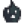
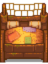
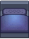
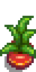
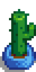
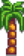
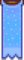

Muebles

|
En construcción Este artículo o sección está en construcción. Actualmente puede ser el proceso de una expansión o reestructuración importante. Última edición por Rodrix el 2024-11-24 14:29:24. |
- Para artículos decorativos fabricados, mira Fabricación.
- Mirar también: Papel de Pared, Suelos
Los Muebles se pueden comprar de Robin en la Carpintería o al comerciante del Carro Ambulante. Las dos tiendas ofrecen una selección al azar de muebles cada día que abren. El costo de los muebles del Carro Ambulante es al azar, pero siempre entre  250 – 2.500o. Los precios de la Carpintería no varían.
250 – 2.500o. Los precios de la Carpintería no varían.
Algunos muebles únicamente se pueden obtener donando artículos al Museo, comprando en los Festivales, el Casino, o el MercaJoja, u otras de origen único. Estas excepciones están listadas en las tablas de abajo.
Después de la primera mejora de la Casa de campo, Robin te ofrece un Catálogo de muebles a la venta en la Carpintería. Una vez puesto, usar el catálogo de muebles permitirá que compras muebles por  0o en una cantidad ilimitada.
0o en una cantidad ilimitada.
La mayoría de los muebles pueden colocarse en el exterior.[1] Sin embargo, algunos objetos sólo pueden colocarse en el interior de la Casa de campo o en un Cobertizo. El mueble se mostrará en un cuadrado verde de casillas donde puede ser ubicado. La casilla se pondrá roja si el mueble no se puede ubicar en un lugar determinado. Nota: Los objetos colocados fuera de la granja se destruirán si un aldeano camina por la casilla donde está colocado. La página de Fabricación muestra mapas creados por los jugadores que indican qué casillas están a salvo del paso de aldeanos.
Los jugadores pueden sentarse en sillas, bancos, sofás y sillones.
Los muebles no se pueden vender en la Caja de Envíos o cualquier otro comerciante/tienda en Stardew Valley.
Controles
- Computador:
 Click-derecho en los muebles mientras se seleccionan para girarlos o colocarlos, dependiendo del artículo. Algunos muebles pueden ser fácilmente recogidos y movidos por hacer
Click-derecho en los muebles mientras se seleccionan para girarlos o colocarlos, dependiendo del artículo. Algunos muebles pueden ser fácilmente recogidos y movidos por hacer  click-izquierdo; otros muebles requieren que el jugador utilice una herramienta o mantenga pulsado el botón izquierdo del ratón para retirarlos una vez colocados.
click-izquierdo; otros muebles requieren que el jugador utilice una herramienta o mantenga pulsado el botón izquierdo del ratón para retirarlos una vez colocados. - Nintendo Switch: Usa el botón
 para rotar muebles.
para rotar muebles.
Sillas
La Silla de cristal no se puede comprar, solo se puede obtener después de donar 41 minerales al museo. La Silla tropical solo está disponible comprándolo al Comerciante isleño por 1 Pez león.
Todas las demás sillas listadas se pueden comprar del Carro Ambulante por  250 – 2.500o, o del Catálogo de muebles por
250 – 2.500o, o del Catálogo de muebles por  0o.
0o.
Las sillas pueden colocarse afuera.
|
|
|
Bancos
Todas las bancas listadas se pueden comprar del Carro Ambulante por  250 – 2.500o, o del Catálogo de muebles por
250 – 2.500o, o del Catálogo de muebles por  0o.
0o.
Los bancos pueden colocarse afuera.
| Artículos | |
|---|---|
Sofás y Sillones
Todos los sofás y sillones listados se pueden comprar del Catálogo de muebles por  0o. La mayoría se puede comprar en el Carro Ambulante por
0o. La mayoría se puede comprar en el Carro Ambulante por  250 – 2.500o, con la excepción del
250 – 2.500o, con la excepción del  Gran sofá marrón. Este se puede comprar en el Oasis por
Gran sofá marrón. Este se puede comprar en el Oasis por  3000o los domingos.
3000o los domingos.
Los sofás y sillones no se pueden colocar afuera.
|
|
Mesas
Todas las mesas listadas se pueden comprar del Carro Ambulante por  250 – 2.500o, o del Catálogo de muebles por
250 – 2.500o, o del Catálogo de muebles por  0o. La Mesilla de invierno también está disponible en el Festival del hielo por
0o. La Mesilla de invierno también está disponible en el Festival del hielo por  1000o
1000o
Las mesas se pueden utilizar para mostrar objetos. Mientras sostiene un objetos, haga clic con el botón derecho en la mesa para mostrarlo. En el caso de mesas grandes, debe pararse cerca del centro de la mesa para mostrar un objeto en ella; ya que de lo contrario levantarás la mesa.
Las mesas se pueden colocar en el exterior.
|
|
|
Mesas largas
Todas las mesas largas listadas se pueden comprar del Carro Ambulante por  250 – 2.500o, o del Catálogo de muebles por
250 – 2.500o, o del Catálogo de muebles por  0o.
0o.
La Mesa de comedor de invierno se puede comprar en el Festival del hielo, y la Mesa de comedor festiva en la Fiesta de la estrella de invierno.
Las mesas largas se pueden colocar afuera.
| Artículo | Otro Precio | |
|---|---|---|
| n/d | ||
| n/d | ||
Estanterías y Cómodas
Todas las estanterías y cómodas listadas se pueden comprar del Carro Ambulante por  250 – 2.500o, o del Catálogo de muebles por
250 – 2.500o, o del Catálogo de muebles por  0o.
0o.
Las cómodas se pueden utilizar para guardar ropa, sombreros, calzado y anillos. No se pueden borrar del inventario con una papelera mientras contengan objetos.
Las estanterías y cómodas no se pueden colocar afuera.
|
|
Chimeneas
Las chimeneas nunca se venden en el Carro Ambulante.
Una vez colocadas, al hacer click derecho sobre las chimeneas se encenderá o apagará el fuego.
Las chimeneas no se pueden colocar afuera.
| Artículos | Otro | |
|---|---|---|
| Catálogo de muebles | ||
| N/A |
| |
| N/A | Mercado nocturno por | |
| N/A |  Krobus por | |
| Catálogo de muebles | ||
| Casa de campo de la isla |
Alfombras
Solo la Alfombra oscura, Alfombra oceánica, Alfombra de retales, y Alfombra roja son vendidas en el Carro Ambulante. El precio de cada una varía entre  250 – 2.500o.
250 – 2.500o.
La Alfombra moderna se puede comprar en Danza de las medusas lunares, la Alfombra Funky en la Víspera de los espíritus, la Alfombra de hielo en el Festival del hielo, la Alfombra roja grande en la Fiesta de la estrella de invierno, y la Alfombra verde claro está disponible de forma aleatoria en la Feria de Stardew Valley. Todos estos están disponibles en el Catálogo de muebles.
La Alfombra de cabaña verde, Alfombra monstruosa, Alfombra mística, Alfombra de cabaña roja. Alfombra huesuda, Alfombra de flores y Alfombra nevada son vendidas solo a través del Catálogo de muebles.
La Alfombra de ensalada de frutas, y la Alfombra pirata están disponibles solo a través del evento de 14 corazones de Penny.
Los Divisores de piso sólo están disponibles en el Catálogo de muebles.
Las alfombras no se pueden colocar afuera.
|
|


Lámparas y Ventanas
Ninguna ventana es vendida en el Carro Ambulante. La Candil y Lámpara ornamental no son vendidas en el Carro Ambulante tampoco. Todas las lámparas listadas se pueden comprar en el Carro Ambulante por  250 – 2.500o.
250 – 2.500o.
La Ventana ornamental se puede comprar en la Fiesta de la estrella de invierno.
Todos los artículos listados se pueden comprar en el Catálogo de muebles por  0o.
0o.
Las lámparas y las ventanas no pueden colocarse afuera. Las lámparas, pero no las ventanas ni los apliques de pared, pueden colocarse en el interior de corrales y establos.
Por la noche, todas las lámparas listadas a continuación proporcionan luz en un radio de unas 6 casillas, y todos los apliques de pared proporcionan luz en un radio de unas 2 casillas.
|
|
Televisores
Todos los televisores excepto por la Televisión tropical se pueden comprar en el Catálogo de muebles por  0o. No se venden en el Carro Ambulante.
0o. No se venden en el Carro Ambulante.
El Televisor barato viene en la casa de campo de la granja estándar y la granja de 4 esquinas y el Televisor de suelo viene con todos los demás tipos de granja.
Los televisores no se pueden colocar en el exterior.
| Artículos | ||
|---|---|---|
| n/d | ||
| n/d | ||
| n/d | ||
| n/d |
Camas
Las camas vienen en dos tipos, camas para niños y camas para adultos. Los jugadores solo pueden dormir en camas para adultos.
Actualmente solo hay una cama para niños.
Las camas no pueden colocarse afuera y sólo pueden colocarse en un espacio habitable (por ejemplo, no en un Cobertizo).
| Artículos | Obtención | Precio |
|---|---|---|
Después de terminar el "El proyecto de Robin" |
||
|  Cama doble del pescador | ||
|  Cama doble moderna | ||
| n/d | ||
| n/d | ||
| n/d | ||
Plantas decorativas
Plantas de interior
Cada una de las 15 plantas de interiores se pueden comprar en la Carpintería por  250o, en el Carro Ambulante por
250o, en el Carro Ambulante por  250 – 2.500o, o en el Catálogo de muebles por
250 – 2.500o, o en el Catálogo de muebles por  0o.
0o.
Las plantas de interior se pueden colocar en el exterior.
| Plantas de interiores | ||||||||||||||
|---|---|---|---|---|---|---|---|---|---|---|---|---|---|---|
|  |  | |||||||||||||
Plantas decorativas de pie
Los Girasoles secos solo se pueden comprar en la Feria de Stardew Valley. El Árbol de lujo, Árbol exótico, Cactus largo, y la Palmera larga solo se pueden obtener en la Máquina de Gancho dentro del Cine. El resto de artículos listados se pueden comprar en el Catálogo de muebles por  0o.
0o.
Las plantas decorativas de pie pueden colocarse en el exterior.
|
|
Plantas Colgantes Decorativas
La Canasta de interior solo se puede obtener en la Máquina del Gancho del Cine. La Palmera de pared solo se puede obtener del Comerciante isleño por 1 Piña. La Maceta de pared solo se puede obtener pescando en el estanque de Bosque secreto.
Todos los demás artículos listados a continuación se pueden comprar en el Catálogo de muebles por  0o.
0o.
Las plantas para colgar en la pared no se pueden colocar en el exterior.
| Artículo | Source | Precio |
|---|---|---|
| Carpintería | ||
| Luau | ||
| Luau | ||
| Máquina del Gancho en El Cine | ||
| Carpintería | ||
| Comerciante isleño | ||
| Danza floral | ||
| Pesca en Bosque secreto | ||
| Oasis | ||
| Danza floral | ||
|  Pegatina Palmera | Luau |
Plantas de temporada
Las seis plantas de temporada pueden ser compradas en el Barco de decoración en el evento de Mercado nocturno por  500o cada una. Las plantas de temporada no se encuentran en el Carro Ambulante o en el Catálogo de muebles. una vez colocadas, su apariencia cambiará con la temporada.
500o cada una. Las plantas de temporada no se encuentran en el Carro Ambulante o en el Catálogo de muebles. una vez colocadas, su apariencia cambiará con la temporada.
Las plantas de temporada se pueden colocar en el exterior.
| Apariencia de Primavera |
Apariencia de Verano |
Apariencia de Otoño |
Apariencia de Invierno |
Vendidas también por: | Precio |
|---|---|---|---|---|---|
| Por Pierre en el Festival del huevo | |||||
| Por Pierre en el Festival del huevo | |||||
| Por Pierre en la Danza floral | |||||
| Por Sandy en el Oasis | |||||
| Por Robin en la Carpintería | |||||
| Por Pierre en la Danza floral |
Pinturas
Ocho pinturas (Mi primer cuadro, «Una noche en Eco-Hill», «Ofrenda quemada», «Colinas de jade», «Barco», Cuadro de vegetación, «Física 101» y «Paisaje») no son vendidas a través del Catálogo de muebles. El resto de pinturas listadas (a excepción de los cuadros del Mercado nocturno) se puede comprar por  0o en el Catálogo de muebles.
0o en el Catálogo de muebles.
«Una noche en Eco-Hill» y «Colinas de jade» solo se pueden obtener como recompensas de donación del Museo. «Ofrenda quemada» puede obtenerse como recompensa por las donaciones al Museo y también se puede comprar en el Casino por  monedas Qi. Mi primer cuadro solo se obtiene al completar el evento de catorce corazones con Leah.
monedas Qi. Mi primer cuadro solo se obtiene al completar el evento de catorce corazones con Leah.
El «Barco» se puede pescar en el punto suroeste de La granja si se ha seleccionado la Granja de la Playa. El Cuadro de vegetación se puede pescar en el río al oeste de Norte de la isla. La «Física 101» se puede pescar en la parte superior de la Mazmorra del volcán. El «Paisaje» se puede pescar en el estanque fuera del Spa.
Las pinturas no se pueden colocar en el exterior.
|
|
Posición de las pinturas pequeñas
Ten en cuenta que algunas pinturas pequeñas se cuelgan más alto o más bajo que otras.

Pinturas del mercado nocturno
El famoso pintor Lupini vende un cuadro diferente cada día del Mercado nocturno por  1200o. Los cuadros van rotando cada 3 años, hasta un total de 9.
1200o. Los cuadros van rotando cada 3 años, hasta un total de 9.
| Articulo | Fecha | Años | Precio |
|---|---|---|---|
| Invierno 15 | 1, 4, 7, etc. | ||
| Invierno 16 | 1, 4, 7, etc. | ||
| Invierno 17 | 1, 4, 7, etc. | ||
| Invierno 15 | 2, 5, 8, etc. | ||
| Invierno 16 | 2, 5, 8, etc. | ||
| Invierno 17 | 2, 5, 8, etc. | ||
| Invierno 15 | 3, 6, 9, etc. | ||
| Invierno 16 | 3, 6, 9, etc. | ||
| Invierno 17 | 3, 6, 9, etc. |
Carteles de cine
Los carteles de películas solo se pueden obtener jugando a la Máquina del Gancho dentro del Cine. Cada póster aparecerá aleatoriamente en la Máquina del Gancho solo durante el tiempo en que su película se proyecte en el Teatro.
Los carteles de películas no se pueden colocar en el exterior.
Banderas
La Bandera de nube es la única Bandera disponible en el Catálogo de muebles.
Las banderas no se pueden colocar en el exterior.
| Item | Source | Price |
|---|---|---|
| Barco de decoración en el Mercado nocturno | ||
|  Bandera de hielo | Festival del hielo | |
| Danza de las medusas lunares | ||
| Festival del huevo | ||
| Fiesta de la estrella de invierno |
Adornos de pared
El Neón Joja-Cola es vendido en el MercaJoja en lugar de la Carpintería.
Los siguientes tapices de pared solo se pueden obtener jugando en la Máquina de gancho dentro del Cine: Canasta de interior, Calabaza pequeña de pared, Calabaza de pared, y Calcomanía árbol de invierno.
Los siguientes tapices de pared solo se pueden obtener durante el evento de 14 corazones de Penny: Calcomanía cielo nocturno nº1, Calcomanía cielo nocturno nº2, Calcomanía cielo nocturno nº3, Bandera pirata, y Calcomanía de fresa.
El Salvavidas solo se puede encontrar pescando en la trastienda de Willy Tienda de pesca. La Pegatina pirámide solo se puede encontrar pescando en el estanque sur del Desierto de Calico.
Los adornos de pared no se pueden colocar en el exterior.
|
|
Peceras
Todas las peceras, excepto la Pecera moderna y el Santuario acuático se pueden comprar a Willy en la Tienda de pesca. Todas las peceras, excepto el Santuario Acuático, pueden comprarse en el Catálogo de muebles por  0o. No se pueden borrar del inventario con el cubo de basura mientras contengan objetos.
0o. No se pueden borrar del inventario con el cubo de basura mientras contengan objetos.
El Pecera de lujo se da como una recompensa por Willy para el pedido especial Pez tropical, después de lo cual está disponible en la Tienda de pesca y en el Catálogo de muebles.
El Santuario acuático solo se puede comprar en la Habitación de nueces del Señor Qi por  20 Gemas Qi. No está disponible en el Catálogo de muebles.
20 Gemas Qi. No está disponible en el Catálogo de muebles.
Las peceras no se pueden colocar afuera.
AntorchasLas antorchas se pueden colocar en el exterior.
MisceláneoTodos los artículos misceláneos listados excepto la Papelera decorativa pueden ser comprados en el Carro Ambulante por Todos están disponibles en el Catálogo de muebles por El Oso de peluche también se puede ganar en la Máquina del Gancho, dentro del Cine. El Tótem también se puede comprar por Todos los artículos que se muestran a continuación, excepto la Vitrina para porcelana y la Tubería industrial, pueden colocarse afuera.
Otras DecoracionesLos siguientes artículos nunca se venden en la Carpintería, en el Carro Ambulante ni a través del Catálogo de muebles. Los artículos que se muestran a continuación pueden colocarse afuera.
EspecialLos siguientes artículos nunca son vendidos en el Carro Ambulante, en el Catálogo de muebles. Aparte del Tronco básico y la Sección de troncos, ninguno de los siguientes artículos se vende en la Carpintería. Los articulos que se muestran a continuación safuera.
Catálogos
Muebles de la casa de campoAbajo hay listas de muebles que vienen con la casa de campo para cada tipo de granja. Todos los muebles que se muestran a continuación también vienen con cada opción de Cabañas de jugadores.
Exploits
Referencias
Historial
|
||||||||||||||||||||||||||||||||||||||||||||||||||||||||||||||||||||||||||||||||||||||||||||||||||||||||||||||||||||||||||||||||||||||||||||||||||||||||||||||||||||||||||||||||||||||||||||||||||||||||||||||||||||||||||||||||||||||||||||||||||||||||||||||||||||||||||||||||||||||||||||||||||||||||||